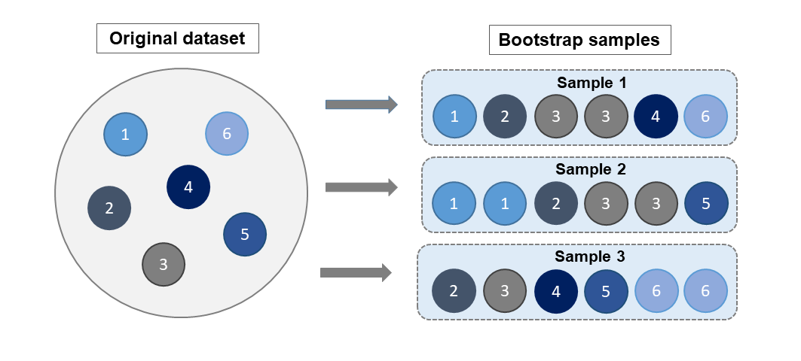
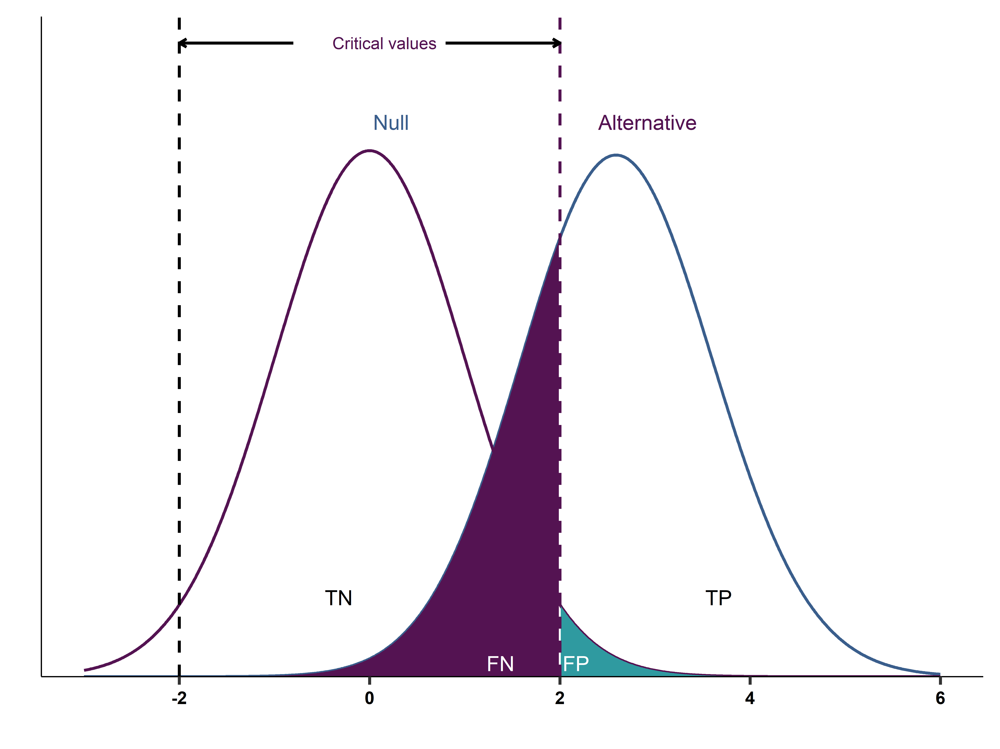

Levy Economics Institute
August 21, 2024
Goal: Generalize the results from a single dataset to other situations.
The act of generalization is called inference: we infer something from our data about a more general sitatuation.
Two Things to consider
A model) is an abstract thing that may or may not exist.The cleanest example of representative data is a representative sample of a well-defined population.
A sample is representative of a population if the distribution of all variables is very similar in the sample and the population. \[f(y,x,z,...)_{sample} \approx f(y,x,z,...)_{population}\]
Random sampling is the best way to achieve a representative sample.
How likely is that what we learn is relevant other situations we care about?
Are our findings unique to our data? or can they happen “out there”?
This has been a problem with RCTs in economics: the results are not always generalizable to other settings.
The process of inference:
It is good practice to divide the inference problem into two:
The sampling distribution has three important properties:
(start=0, width=.002)How bad is the error in our estimate?
CI is almost always symmetric around the estimated value of the statistic in our dataset. (if we assume normality of the sampling distribution)
How to calculate the CI?
Under Normality, 90% CI is the ±1.645SE interval, the 99 % CI is the ±2.576SE.
But we commonly use the rule of 2: ±2SE.
Consider the statistic of the sample mean.
The standard error formula for the estimated \(\bar{x}\) is \[SE (\bar{x}) = \frac{1}{\sqrt{n}} Std[x]\]
where \(Std[x]\) is the standard deviation of the variable \(x\) in the data and \(n\) is the number of observations in the data.
to lift oneself by one’s bootstraps
The bootstrap method takes the original dataset and draws many repeated samples (with replacement) of the size of that dataset.
Say you have a dataset of 10 observations, named 1, 2, 3, …, 10.
Each new sample is called a bootstrap sample.

Bootstraping in Stata can be easy. Most commands have a built-in bootstrap option. Otherwise, we can program it!
| Mean | ||||
|---|---|---|---|---|
| Formula | 0.0052 | [0.0023,0.0080] | ||
| Bootstrap | 0.0052 | [0.0024,0.0080] | ||
| N | 2519 | 2519 |
The truth is out there, but its unknowable.
\(H_0\): Online and offline prices are the same. \(H_a\): Online and offline prices are different.
Innocent (H0) until proven guilty (Ha)
Testing a hypothesis \(H_0\)= see if there is enough evidence in our data to reject the null.
The null is protected: We start assuming the Null is true
\[H_0: \theta = 42 \ \ vs \ \ H_A: \theta \neq 42\]
Each product \(i\) has an off-line and on-line price.
The statistic with \(n\) observations (products) in the data, is: \[s = \bar{p}_\text{diff} = \frac{1}{n} \sum_{i=1}^n (p_{i,\text{online}} - p_{i,\text{offline}})\]
The average of the price differences is equal to the difference of the average prices \[\frac{1}{n} \sum_{i=1}^n (p_{i,\text{online}} - p_{i,\text{offline}}) = \frac{1}{n} \sum_{i=1}^n p_{i,\text{online}} - \frac{1}{n} \sum_{i=1}^n p_{i,\text{offline}}\]
Descriptive statistics of the difference:
Good old t-test
When \(\hat{s}\) is the average of a variable \(x\), the t-statistic is simply \[t = \frac{\bar{x}}{\text{SE}(\bar{x})}\]
When \(\hat{s}\) is the average of a variable \(x\) minus a number, the t-statistic is \[t = \frac{\bar{x} - \text{number}}{\text{SE}(\bar{x})}\]
When \(\hat{s}\) is the difference between two averages, say, \(\bar{x}_A\) and \(\bar{x}_B\), the t-statistic is \[t = \frac{\bar{x}_A - \bar{x}_B}{\text{SE}(\bar{x}_A - \bar{x}_B)}\]
While we can use SE to calculate the t-statistic, SE may be more difficult to calculate in some situations.
Some times you may want to use Bootstrap to calculate SE.
Stata Corner: ttest command in Stata calculates the t-statistic for a difference in means.
| \(H_0\) is true | \(H_0\) is false | |
|---|---|---|
| Do not reject \(H_0\) | Correct | False negative (Type II) |
| Reject \(H_0\) | False positive (TYPE I) | Correct |
Both types of errors are wrong but
During Testing the null is protected: we only reject it if there is enough evidence against it.
The background assumption
Decision rule (critical value) is chosen in a way that makes false positives rare.
A commonly applied critical value for a t-statistic is ±2 (or 1.96), a 95% confidence level, or a 5% level of significance (alpha).
Other critical values can be set: 10% (1.65), 1% (2.58), etc.
That choice of 5% means that we tolerate a 5% chance for being wrong when rejecting the null (1/20).

Under the null:
Under the alternative:
Testing in statistics means making a decision about the value of a statistic in the general pattern represented by the data.
Rios-Avila and Cia